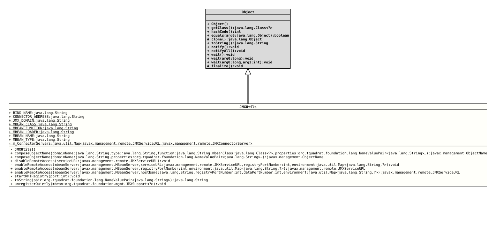

Class JMXUtils
- Author:
- Thomas Thrien (thomas.thrien@tquadrat.org)
- Version:
- $Id: JMXUtils.java 1217 2026-05-02 12:58:09Z tquadrat $
- Since:
- 0.0.1
- UML Diagram
-

UML Diagram for "org.tquadrat.foundation.mgmt.JMXUtils"
{kind=link}
-
Field Summary
FieldsModifier and TypeFieldDescriptionstatic final StringThe JNDI name for the exposedMBeanServer: "jmxrmi"static final StringThe property name for the connector address: "com.sun.management.jmxremote.localConnectorAddress".static final StringThe name of the JMX domain that is used by all JMX enabled components of the library.private static final Map<JMXServiceURL, JMXConnectorServer> TheJMXConnectorServerinstance that expose anMBeanServer.static final StringThe property name for the class of an MBean: "class".static final StringThe property name for the function of an MBean: "function".static final StringThe property name for the loader of an MBean: "loader".static final StringThe property name for the name of an MBean: "name".static final StringThe property name for the MBean type: "type". -
Constructor Summary
Constructors -
Method Summary
Modifier and TypeMethodDescriptionstatic ObjectNamecomposeObjectName(String domainName, String type, String function, Class<?> mbeanClass, NameValuePair<String>... properties) Composes an object name from the given domain name and the given properties.static ObjectNamecomposeObjectName(String domainName, NameValuePair<String>... properties) Composes an object name from the given domain name and the given properties.static final voiddisableRemoteAccess(JMXServiceURL serviceURL) Disables the external access to theMBeanServerfor the given service URL.static final JMXServiceURLenableRemoteAccess(MBeanServer mbeanServer, int registryPortNumber, Map<String, ?> environment) Enables the external access to theMBeanServerfrom a process running on the same machine.static final JMXServiceURLenableRemoteAccess(MBeanServer mbeanServer, String hostName, int registryPortNumber, int dataPortNumber, Map<String, ?> environment) Makes theMBeanServeraccessible for remote machines.private static final voidenableRemoteAccess(MBeanServer mbeanServer, JMXServiceURL serviceURL, int registryPortNumber, Map<String, ?> environment) Enables the external access to theMBeanServer.private static final voidstartRMIRegistry(int port) Ensures that an RMI registry is running for given the port.private static final StringtoString(NameValuePair<String> pair) Converts an instance ofNameValuePairto a String.static voidunregisterQuietly(JMXSupport<?> mbean) Unregisters the given MBean from the MBeanServer.
-
Field Details
-
BIND_NAME
-
CONNECTOR_ADDRESS
The property name for the connector address: "com.sun.management.jmxremote.localConnectorAddress".- See Also:
-
JMX_DOMAIN
The name of the JMX domain that is used by all JMX enabled components of the library.- See Also:
-
MBEAN_CLASS
The property name for the class of an MBean: "class".- See Also:
-
MBEAN_FUNCTION
The property name for the function of an MBean: "function".- See Also:
-
MBEAN_LOADER
The property name for the loader of an MBean: "loader".- See Also:
-
MBEAN_NAME
-
MBEAN_TYPE
-
m_ConnectorServers
TheJMXConnectorServerinstance that expose anMBeanServer.- See Also:
-
-
Constructor Details
-
JMXUtils
private JMXUtils()No instance allowed for this class.
-
-
Method Details
-
composeObjectName
@SafeVarargs @API(status=STABLE, since="0.0.1") public static ObjectName composeObjectName(String domainName, String type, String function, Class<?> mbeanClass, NameValuePair<String>... properties) throws MalformedObjectNameException Composes an object name from the given domain name and the given properties.
The object name has the form
<Domain>:type=<Type>,function=<Function>[, class=<Class>][,…]The type is something like a category.
The function is a description for what the MBean does.
The class can be provided, if multiple MBean implementations with the same type and function will be loaded.
Additional properties in the form
<name>=<value>can be added as required.- Parameters:
domainName- The domain name.type- The type of the MBean that will be named with the new object name.function- The function of the MBean.mbeanClass- The MBean's class; can benull.properties- Additional properties as name-value-pairs; can benull.- Returns:
- The object name.
- Throws:
MalformedObjectNameException- It is not possible to create a valid object name from the given domain name and properties.
-
composeObjectName
@SafeVarargs @API(status=STABLE, since="0.0.1") public static ObjectName composeObjectName(String domainName, NameValuePair<String>... properties) throws MalformedObjectNameException Composes an object name from the given domain name and the given properties.- Parameters:
domainName- The domain name.properties- The properties as name-value-pairs; at least one property has to be provided.- Returns:
- The object name.
- Throws:
MalformedObjectNameException- It is not possible to create a valid object name from the given domain name and properties.
-
disableRemoteAccess
@API(status=STABLE, since="0.25.3") public static final void disableRemoteAccess(JMXServiceURL serviceURL) throws IOException Disables the external access to the
MBeanServerfor the given service URL. Nothing happens if there was no NBean server exposed that URL.Internally, this method deactivates the connector server, that is, stops listening for client connections. Calling this method will also close all client connections that were made by this server. After this method returns, whether normally or with an exception, the connector server will not create any new client connections.
Once a connector server has been stopped, it cannot be started again.
Calling this method when the connector server has already been stopped has also no effect.
If closing a client connection produces an exception, that exception is not thrown from this method. A
JMXConnectionNotificationwith typeJMXConnectionNotification.FAILEDis emitted from this MBean with the connection ID of the connection that could not be closed.Closing a connector server is a potentially slow operation. For example, if a client machine with an open connection has crashed, the close operation might have to wait for a network protocol timeout. Callers that do not want to block in a close operation should do it in a separate thread.
This method works for both locally and remotely exposed connector servers.
- Parameters:
serviceURL- The URL that is used to connect to the MBean server.- Throws:
IOException- The connection server cannot be closed cleanly. When this exception is thrown, the connection server has already attempted to close all client connections. All client connections are closed except possibly those that generated exceptions when the server attempted to close them.- Since:
- 0.25.3
-
enableRemoteAccess
@API(status=INTERNAL, since="0.25.3") private static final void enableRemoteAccess(MBeanServer mbeanServer, JMXServiceURL serviceURL, int registryPortNumber, Map<String, ?> environment) throws IllegalStateException, IOException, RemoteExceptionEnables the external access to the
MBeanServer.enableRemoteAccess(MBeanServer,String,int,int,Map)andenableRemoteAccess(MBeanServer,int,Map)are delegating to this method. See there for details.- Parameters:
mbeanServer- The MBean server that should be exposed.serviceURL- The service URL.registryPortNumber- The port number that is used for the registry connection.environment- The configuration settings for theJMXConnectorServer.- Throws:
RemoteException- The RMI registry cannot be created/exported.IOException- Failed to create the connection server.IllegalStateException- The connection server was previously stopped and the attempt to restart it failed.- Since:
- 0.25.3
-
enableRemoteAccess
@API(status=STABLE, since="0.25.3") public static final JMXServiceURL enableRemoteAccess(MBeanServer mbeanServer, int registryPortNumber, Map<String, ?> environment) throws IllegalStateException, IOException, RemoteExceptionEnables the external access to the
MBeanServerfrom a process running on the same machine.Basically, this method creates a new instance of
JMXConnectorServer, registers it to a JNDI registry associated with the given port number, and finally starts it.If the registry does not exist yet, it will be created first.
The same MBean server can be multiple times, using this method or
enableRemoteAccess(MBeanServer,String,int,int,Map), but the given port numbers must be different.- Parameters:
mbeanServer- The MBean server that should be exposed.registryPortNumber- The port number that is used for the connection.environment- The configuration settings for theJMXConnectorServerthat is used to expose the MBean server. This parameter can benull, although it is recommended to useMap.of()in case no attributes should be provided. The keys in this map must be Strings. The appropriate type of each associated value depends on the attribute. The contents ofenvironmentare not changed by this call.- Returns:
- The
JMXServiceURLthat was used to register the MBean server. It has the formatservice:jmx:rmi:///jndi/rmi://localhost:<port>/jmxrmi. - Throws:
RemoteException- The RMI registry cannot be created/exported.IOException- Failed to create the connection server.IllegalStateException- The connection server was previously stopped and the attempt to restart it failed.- Since:
- 0.25.3
- See Also:
-
enableRemoteAccess
@API(status=STABLE, since="0.25.3") public static final JMXServiceURL enableRemoteAccess(MBeanServer mbeanServer, String hostName, int registryPortNumber, int dataPortNumber, Map<String, ?> environment) throws IllegalStateException, IOException, RemoteExceptionMakes the
MBeanServeraccessible for remote machines.Basically, this method creates a new instance of
JMXConnectorServer, registers it to a JNDI registry associated with the given port number, and finally starts it.If the registry does not exist yet, it will be created first.
The same MBean server can be multiple times, using this method or
enableRemoteAccess(MBeanServer, int, Map), but the given port numbers must be different.- Parameters:
mbeanServer- The MBean server that should be exposed.hostName- The host name that is used for the connection.registryPortNumber- The port number that is used for the registry connection.dataPortNumber- The port number that is used for the data transport.environment- The configuration settings for theJMXConnectorServerthat is used to expose the MBean server. This parameter can benull, although it is recommended to useMap.of()in case no attributes should be provided. The keys in this map must be Strings. The appropriate type of each associated value depends on the attribute. The contents ofenvironmentare not changed by this call.- Returns:
- The
JMXServiceURLthat was used to register the MBean server. It has the formatservice:jmx:rmi://<host>:<dataPort>/jndi/rmi://<host>:<registryPort>/jmxrmi - Throws:
RemoteException- The RMI registry cannot be created/exported.IOException- Failed to create the connection server.IllegalStateException- The connection server was previously stopped and the attempt to restart it failed.MalformedURLException- It is not possible to compose a validJMXServiceURLwith the givenhostName.- Since:
- 0.25.3
- See Also:
-
startRMIRegistry
Ensures that an RMI registry is running for given the port. If there is no registry, a new one will be started.
- Parameters:
port- The registry port.- Throws:
RemoteException- The registry cannot be created.
-
toString
Converts an instance ofNameValuePairto a String.- Parameters:
pair- The name-value-pair.- Returns:
- The String representation of the name-value-pair.
-
unregisterQuietly
Unregisters the given MBean from the MBeanServer. All exceptions – if any – will be swallowed silently.- Parameters:
mbean- The mbean to unregister; may benull.
-